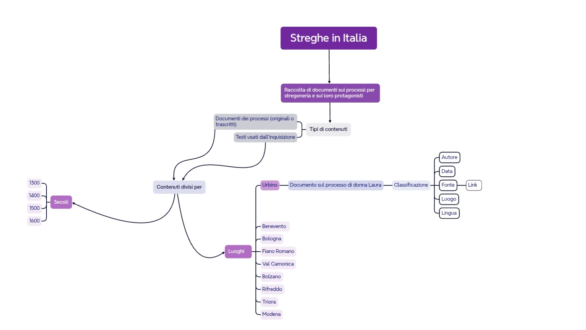

Idea
Il sito web si chiama Streghe in Italia e raccoglie al suo interno documenti originali o trascritti dei processi avvenuti in Italia durante il periodo della caccia alle streghe e i principali testi di riferimento utilizzati dagli inquisitori. I documenti sono consultabili liberamente e vi si può accedere tramite diversi strumenti di navigazio
Brief
Il progetto ha come scopo quello di raccogliere documenti e informazioni sui processi per stregoneria avvenuti in Italia e sui loro protagonisti (inquisitori e streghe).
I contenuti sono accessibili a tutti coloro che sono interessati, senza alcuna limitazione. La consultazione è possibile solo mediante pc, per permettere una corretta visualizzazione dei testi inclusi.
I documenti verranno reperiti da archivi pubblici online oppure siti d'informazione che ne permettano l'utilizzo (ad esempio Wikipedia).
Benchmark
Ci sono siti turistici che parlano dello stesso argomento ma nell’ottica di visitare quei luoghi, oppure siti informativi di impostazione enciclopedica. La mia proposta ha fine informativo, ma è organizzata in maniera tale da dare rilevanza a ogni processo preso singolarmente con documenti che raccontino le vicende per come sono accadute, per dare tutte le informazioni utili anche per possibili fini di ricerca.
Siti web concorrenti
1. Wikipedia
Wikipedia è un'enciclopedia online che contiene anche alcune voci dedicate alla stregoneria in Italia. Si tratta di testi storico-descrittivi, affiancati da alcune illustrazioni e alcuni documenti.
Da questo sito sono state prese le immagini e alcuni documenti.
2. Ereticopedia
Il sito si autodefinisce "costruzione collaborativa di un dizionario online di eretici, dissidenti e inquisitori del mondo mediterraneo" e si affianca a spazi di discussione e a una rivista. Riporta anche informazioni su alcuni processi per stregoneria, ma con un'impostazione prettamente enciclopedica. Non è quindi previsto alcun documento, ma solo una bibliografia finale.
Siti di riferimento
Europeana
Europeana è una collezione di oggetti appartenenti al patrimonio culturale europeo. Da questo sito è stata ripresa parte dell'impostazione della homepage, più precisamente l'area con l'introduzione al sito e la posizione della barra di ricerca principale.
Struttura
Mappa concettuale
La mappa concettuale vuole sintetizzare i contenuti del sito e mettere in evidenza le relazioni tra essi. I colori indicano gli elementi più importanti (viola scuro) e meno importanti (viola chiaro, grigio e bianco).
Schema delle dipendenze

La home permette di accedere, tramite navbar alle due modalità di raccolta degli oggetti presenti nel sito. All'interno della navbar è inoltre presente anche una barra di ricerca. Dalle pagine dei "luoghi" e dei "secoli" si accede direttamente al documento d'interesse, analizzato secondo le categorie Dublin Core
Categorie di descrizione dell'item
1. Titolo
2. Autore della testimonianza
3. Data
4. Fonte
5. Luogo
6. Lingua
Layout
Homepage
La Homepage del sito è costruita partendo dalla Navbar in cui sono presenti:
1. Il logo del sito (SI)
2. Il nome del sito (Streghe in Italia)
3. La tre voci: Home, Luoghi e Secoli, con un dropdown per l'ultima voce
4. Una barra di ricerca attraverso cui l'utente potrà cercare gli items sia cercando il documento d'interesse, sia cercando un luogo o una data.
Sotto la Navbar è posta una box con il nome del sito, una breve introduzione al progetto e, sotto, una barra di ricerca che funziona con le stesse modalità della precedente, ma più visibile.
Scorrendo ancora verso il basso è presente una mappa, attraverso la quale si possono cercare i luoghi dei processi per stregoneria di cui sono stati raccolti i documenti. I luoghi sono contrassegnati con dei segnalini che, cliccandoci sopra, riportano il nome della località.
Sotto la mappa si trova una sezione dedicata ai testi usati dall'inquisizione durante il periodo della caccia alle streghe. Da qui, cliccando sulla scritta "I testi dell'inquisizione" o sui titoli delle cards, è possibile raggiungere la pagina dedicata ai soli testi di questo tipo.
Infine, in fondo alla pagina, abbiamo il footer con dei links che rimanderanno alle seguenti pagine di approfondimento:
1. Il creatore del sito
2. la cronologia degli aggiornamenti apportati al sito
3. Il Web project plan
4. Le condizioni d'uso e i diritti di copyright
5. Un sistema di supporto per qualsiasi problema possa esserci con il sito web
La Navbar e il footer saranno strutturati così anche nelle pagine gerarchicamente inferiori.
Luoghi
La pagina dei Luoghi è quella presa da esempio per mostrare come sarebbero strutturate le pagine di raccolta degli items, anche se si differenziano per tipo di accesso (se raccolti in base al luogo in cui è avvenuto il processo o se raccolti in base alla data del documento).
In alto si trovano le breadcrumbs, per mostrare sempre all'utente la sua posizione all'interno del sito web.
Gli items sono strutturati per cards, ognuna costruita su una località diversa. Nelle cards sono presenti le foto dei luoghi e delle brevi descrizioni sui processi di cui si parla in ognuna. Cliccando sul nome della località si accede alla pagina dell'item per visualizzare i documenti.
A fine pagina è presente un pagination per suddividere i documenti in più pagine.
Elemento-foglia
Quando l'utente entra nella pagina dell'elemento-foglia può vedere come prima cosa la foto del documento con, a destra, la tabella dei metadati. Cliccando sul titolo del documento è possibile visualizzare l'intera risorsa, mentre cliccando sulla fonte è possibile visitare il sito web di questa stessa.
In basso è posta una descrizione riassuntiva del processo di cui si parla.
Usabilità
Architettura
Nello sviluppo del sito si è tenuto conto delle regole di usabilità di Nielsen. La Navbar, che contiene al suo interno anche gli strumenti di riconoscimento, si trova in alto e vi rimane anche nelle pagine gerarchicamente inferiori. Cliccando sulle voci nella Navbar l'utente può raggiungere velocemente la categoria scelta di items. Per tornare alla homepage da qualsiasi pagina, basta cliccare sulla voce "Home". Inoltre, per suddividere meglio i contenuti, nella voce "Secoli" è presente un dropdown per selezionare direttamente il periodo storico di interesse.
Nella homepage è stata inserita anche una mappa geografica interattiva con markers e popup per permettere agli utenti di avere una visione più completa delle dimensioni del fenomeno della caccia alle streghe in Italia e di avere una modalità alternativa e più attraente di navigazione. Cliccando sui popup si raggiunge la pagina dell'item, in base al luogo selezionato.
Nel footer sono presenti le informazioni riguardanti l'autore del sito, la cronologia degli aggiornamenti, il sistema di supporto, il web project plan e i diritti di copyright. Queste informazioni sono in tal modo facilmente accessibili, ma non occupano uno spazio centrale, non essendo destinate all'utente occasionale.
Nelle pagine gerarchicamente inferiori alla homepage sono sempre presenti le "briciole di pane", in modo che l'utente possa vedere in ogni momento la sua posizione all'interno del sito.
Nelle pagine che contengono gli item è stato inserito un pagination per scorrere tra i diversi documenti
Aspetto e tipografia
Per quanto riguarda i colori scelti per il sito web, sono stati usati il viola (con diverse gradazioni per la navbar e per parte dello sfondo della homepage), il blu nel wallpaper introduttivo e il nero e il bianco per i testi. I primi tre colori sono stati usati perchè evocano il tema del sito, cioè la stregoneria e le arti magiche. Il bianco è stato usato per praticità, per scrivere su uno sfondo scuro.
Il font usato è Georgia, preso da Google Fonts.
Nella homepage sono state utilizzate delle cards con i testi usati dagli inquisitori, per permettere agli utenti di visualizzare una tipologia specifica di documenti.
Servizi
Strumenti di browsing
1. Search bar nella navbar;
2. search bar centrale sotto l'introduzione;
3. Mappa nella homepage;
4. Breadcrumbs;
5 Items nelle cards della homepage
Strumenti di interazione
1. cards;
2. Mappa "Leaflet" nella homepage con markers e popup;
3. Dropdown nella navbar;
4. Pagination nella pagina "Luoghi"
Strumenti aggiuntivi per l'interazione
Per la mappa nella homepage è stato usato il sito di "Leaflet". I markers sono posti sui luoghi d'interesse e, cliccandoci sopra, appaiono i popup, che permettono di arrivare alle pagine degli item
Bibliografia e sitografia
Web project plan
1. Lezioni e slides del corso di Informatica Umanistica di F. Tomasi a.a. 2024-2025;
2. F. Tomasi, Metodologie informatiche e discipline umanistiche, Carocci, Roma 2008
Codice
1. Lezioni e slides del corso di Informatica Umanistica di F. Tomasi a.a. 2024-2025;